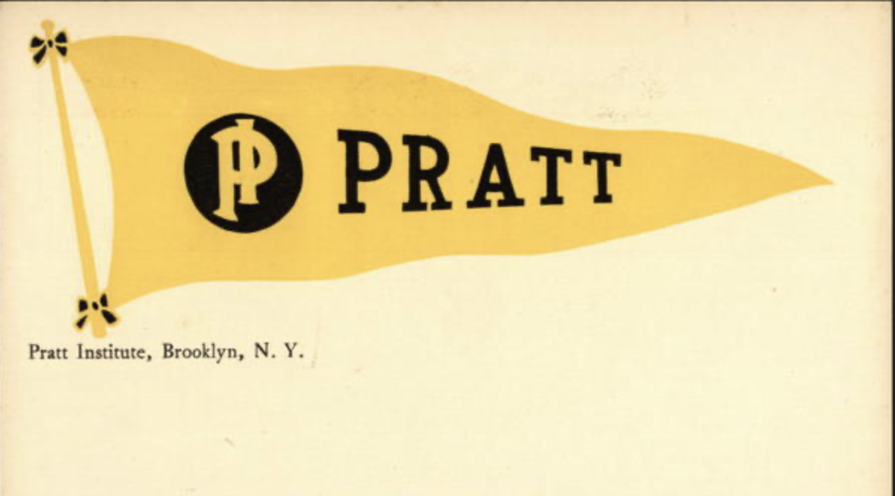
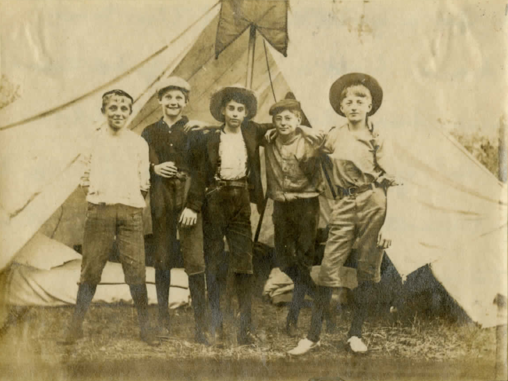

Film Preservation
Paul Sharits Collection
A two-year preservation and re-exhibition effort for Paul Sharits' nine multi-projector installation works, undertaken with Anthology Film Archives, Greene Naftali Gallery, and the Sharits estate. Sharits' 1975 Shutter Interface — four overlapping 16mm film loops projecting color fields in a darkened gallery — is among the works documented by the Smithsonian's Time-Based Media program.

Code & Tools
GitHub Projects
A collection of scripts, services, and experiments spanning data visualization, AI and LLM tooling, metadata crosswalks and translators, and podcast infrastructure. Most work lives at the intersection of public media systems and open standards.

Teaching
Pratt Institute — Found-Sound Tape Digitization
As a visiting professor at Pratt Institute's School of Information, I led a cohort of MLIS candidates through a hands-on preservation practicum: physical inspection, repair, metadata creation, digital repository workflow, and the legal landscape around orphan works — all applied to a collection of found ¼″ open-reel tapes from the 1970s. Digitized items are archived in the Internet Archive's Pratt Institute collection.

Music
Nethers — In Fields We Will Lie
Washington D.C.'s Nethers played story-songs of doomed canaries, heiresses hiding from plagues, and parades at sea — a spectral blend of pop, country, and psych released on Teen-Beat Records. NPR featured the band in 2008 around their album In Fields We Will Lie.

Personal Archive
Passmore Family Archive
A private digital archive for the Passmore family — photographs, documents, and media spanning multiple generations, built on ResourceSpace open-source digital asset management. Access is by invitation.